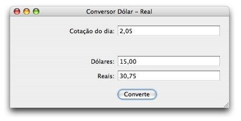
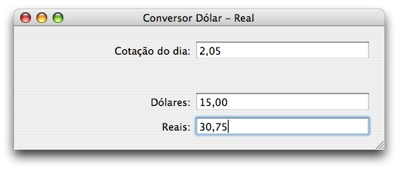
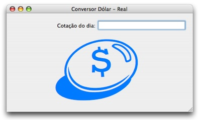
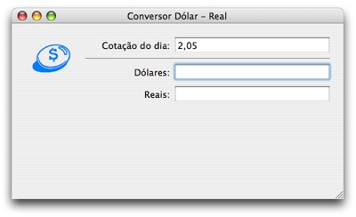
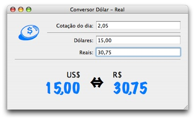

Veja o vídeo da palestra completa (34 minutos):
Acompanhe o tutorial em seu Mac, seguindo estas instruções:
1. Apresentação
Este tutorial é uma demonstração do PyObjC, que faz a ponte entre Python e Cocoa, a poderosa API usada pelos aplicativos do Mac OS X.
Com ele instalado, o programador usa o Xcode e o Interface Builder normalmente, codificando em Python, sem precisar saber nada de Objective-C ou AppleScript.
Os aplicativos resultantes funcionam exclusivamente no Mac, usufruindo de todas as suas tecnologias nativas.
Para saber mais:
2. Dolar - Versão com Outlets e Actions

Baixe os fontes (Zip, 60 KB)
2.1. Instale o ambiente de desenvolvimento
- Instale o Xcode (leia instruções)
-
Instale o PyObjCÀ partir do Leopard, o PyObjC já faz parte do sistema.
2.2. Crie um projeto novo e salve na mesa
- Abra o Xcode
- New Project → Application → PyObjC Application
- Project Directory: ~/Desktop/Dolar
2.3. Veja os arquivos criados
- Info.plist
- CFBundleShortVersionString
- Copyright
- setup.py
- Construção do aplicativo
- Não precisa mexer
-
Dolar.py
- Arquivo principal do programa
- Não precisa mexer
-
DolarAppDelegate.py
- Classe base para brincar (já instanciada no Interface Builder)
- Coloque aqui seus métodos
- MainMenu.nib
- Editável no Interface Builder (chamado de IB daqui adiante)
- Arquivo com as definições de posicionamentos e conexões entre elementos
2.4. Crie a interface no IB
- Chame o Interface Builder Duplo clique no MainMenu.nib
- Mostre o Inspetor Tools → Show Inspector
- Dê um título para a janela Inspetor → Attributes → Window Title: Conversor Dólar - Real
- Ligue as guias de posicionamento Layout → Guides → Enable Aqua Guidelines
- Mostre as paletas Tools → Palettes → Show Palettes
- Arraste os elementos para a janela
- 3 labels Paleta → Text → System Font Text
- 3 caixas de texto Paleta → Text → NSTextField
- 1 botão Paleta → Controls → Button
- Coloque nomes nos labels e no botão Duplo clique no elemento
- Cotação do dia:
- Dólares:
- Reais:
- Converter
2.5. Crie as ligações para comunicar-se com a classe
- Duplo clique na instância do AppDelegate (cubo azul)
- Adicione outlets para as caixas de texto Inspetor → Attributes → Outlets → Add
- cotacao
- dolares
- reais
- Adicione um action para o botão Inspetor → Attributes → Action → Add
- converte:
2.6. Conecte os elementos com as ligações
- Conecte os outlets com suas respectivas caixas de texto
- Ctrl-click na instância do AppDelegate (cubo azul)
- Arrasta até a caixa de texto da cotação
- Inspetor → Connections → Outlets → cotacao → Connect
- Repita para as outras caixas de texto
- Conecte o botão com sua ação
- Ctrl-click no botão
- Arrasta até a instância do AppDelegate
- Inspetor → Connections → Target/Action → converte: → Connect
2.7. Crie o executável
- Volte ao Xcode
- Project → New Custom Executable...
- Executable Name: Dolar (uma palavra para não complicar)
- Executable Path: /usr/bin/env
- Groups & Files → Executables → Seleciona teu executável
- File → Get Info → Arguments → Botão [+]
- Argument: Dolar.app/Contents/MacOS/Dolar
2.8. Teste o programa
- Build → Build and Run
- Botão não faz nada
- Veja no log a mensagem sobre falha na conexão do action converte:
2.9. Arrume o erro do log
- Edite o código Python Duplo clique em DolarAppDelegate.py
- Dentro da classe, crie o método converte_
- def converte_(self, sender): pass
- Sempre lembre-se que ":" deve virar "_" no nome do método
- Teste o programa novamente
- Agora sem erros no log, mas o botão continua sem ação
2.10. Descubra objetos e métodos
- Coloque comandos dentro do converte_()
- print self.cotacao # outlet
- <NSTextField: 0x154c110>
- Rode e teste o programa
- Descubra os métodos do NSTextField
- Chame a Ajuda para o Cocoa Help → Documentation → Search Groups → Cocoa
- Faça a pesquisa pelo elemento Digite NSTextField na caixa de busca
- Veja os métodos
- Nenhum em especial
- Veja os métodos do pai NSControl (herdado)
- floatValue()
- Mude o print para mostrar o conteúdo da caixa de texto
- print self.dolares.floatValue()
- self: Instância da classe (Python)
- dolares: Outlet de comunicação (Interface Builder)
- floatValue(): Método do NSTextField (Objective-C)
- Salada! :)
- print self.dolares.floatValue()
- Rode e teste o programa
2.11. Faça o algoritmo do cálculo
- dolares = self.dolares.floatValue()
- cotacao = self.cotacao.floatValue()
- reais = dolares * cotacao
- print reais
2.12. Descubra como gravar o conteúdo do TextField
- Veja Documentação novamente
- Ache o setFloatValue: do NSControl
- Grave o resultado do cálculo na caixa de texto dos Reais
- self.reais.setFloatValue_(reais)
- Lembre-se que no Python o ":" vira "_"
- Rode e teste o programa
2.13. Melhorando: Use formatadores de dinheiro
- Vá no IB
- Arraste o formatador de dinheiro para cada caixa de texto da cotação Paleta → Text → NSNumberFormatter
- Configure o formatador para nossa moeda Inspetor → Formatter → [x] Localize
- Repita o procedimento para as caixas de dólares e reais
- Rode e teste o programa
3. Dolar - Versão com Bindings

Baixe os fontes (Zip, 60 KB)
3.1. Crie um projeto novo para Bindings
- Salve e feche projeto atual no Xcode e IB
- Vá na mesa F11
- Duplique o diretório do projeto Command-D
- Renomeie a pasta nova para: Dolar Bindings
- Entre nessa pasta e abra o arquivo Dolar.xcodeproj
- Rode o programa para ter certeza que tudo continua funcionando Build → Build and Run
3.2. Limpe os Outlets e Actions
- Vá no IB Duplo clique no MainMenu.nib
- Apague todos os outlets Duplo clique na instância do AppDelegate (cubo azul) Inspetor → Attributes → Outlets → Remove
- Apague o Action Inspetor → Attributes → Action → Remove
- Apague o botão "Converter", pois não será mais usado Selecione o botão na janela e aperte Delete
3.3. Crie os Bindings no IB
- Selecione a caixa de texto da cotação
- Inspetor → Bindings → Value → value
- Bind to: DolarAppDelegate
- Model Key Path: cotacao
- [x] Continuously Update Values
- Isso mandará uma ação a cada alteração no texto da caixa
- E chamará automaticamente o método setCotacao_ no Python
- O nome do método é sempre "set" + capitalize(Model Key Path) + "_"
- Repita o procedimento para as outras caixas de texto
3.4. Crie os Bindings no Python
- Vá no Xcode
- Edite o DolarAppDelegate.py
- Importe o módulo "objc"
- import objc
- Logo após a declaração da classe DolarAppDelegate, crie três "ivar"
- cotacao = objc.ivar(u"cotacao")
- dolares = objc.ivar(u"dolares")
- reais = objc.ivar(u"reais")
- Atente aos detalhes
- Lembre-se que o nome do binding vem em Unicode
- Esse nome do binding é o Model Key Path que você preencheu no IB
- Cada um destes bindings representa o conteúdo da caixa de texto
3.5. Crie o método para converter Dólares em Reais
- Ao se digitar o valor em dólares, o valor em reais será calculado automaticamente
- Para isso, crie o método que cuidará das alterações na caixa de dólares
- def setDolares_(self, valor):
- Lembre-se do _ no final, pois recebe argumento
- Guarde o valor digitado pelo usuário na referência ao binding (ivar)
- self.dolares = valor
- Faça as contas e guarde o resultado
- self.reais = self.dolares * self.cotacao
- O resultado será atualizado automaticamente
- Rode e teste o programa
3.6. Crie o método para converter Reais em Dólares
- Ao se digitar o valor em reais, o valor em dólares será calculado automaticamente
- Similar ao passo anterior, crie o método set
- def setReais_(self, valor):
- Guarde o valor e faça o cálculo
- self.reais = valor
- self.dolares = self.reais / self.cotacao
- Rode e teste o programa
- Perceba que o antigo método converte_() não é mais necessário
3.7. Melhorias na interface
- Visualização dos resultados
- Crie outros labels usando letras grandes e coloridas para mostrar os valores em reais e dólares
- Faça bindings destes textos com o conteúdo das caixas de texto, para serem atualizados automaticamente
- Usabilidade
- Use um binding para esconder as caixas de dólares e reais enquanto a cotação não for digitada
- Inspetor → Bindings → Availability → hidden
- Bind to: DolarAppDelegate
- Model Key Path: cotacao
- Value Transformer: NSIsNil
- Isso deixa claro para o usuário que a cotação deve ser digitada primeiro
- Além de evitar a necessidade de verificações no código Python, pois a cotação sempre vai estar preenchida
- Chega de "if self.cotacao:" nos setFoo_()



Baixe os fontes (Zip, 68 KB)
4. Outros Programas
4.1. Markup Babel - Interface Cocoa para programa de console
Um exemplo de como fazer um interface Cocoa para um programa Python já existente. O aplicativo txt2tags foi usado como módulo, convertendo textos automaticamente enquanto o usuário digita. Foi usada a técnica de binding no conteúdo com o método setReferencia_() agindo a cada tecla digitada.
{kind=link}
Baixe os fontes, abra no Xcode e rode (Build and Run).
4.2. contatos.py - Programa de linha de comando com PyObjC
Um exemplo de como usar o PyObjC para programas de linha de comando. É utilizado o framework da Agenda do Mac (Address Book), acessando os dados dos contatos em tempo real e mostrando na tela.
Baixe os fontes e execute no Terminal.app: python contatos.py
4.3. AB Reports - Programa complexo
Um exemplo de como fazer um programa mais complexo, utilizando as tecnologias disponíveis no Mac OS X.
- Data source (tabelas)
- Ordenar os dados pela coluna FOO (ordem direta e reversa)
- Trocar colunas de lugar (arrastando)
- Live search
- Com o uso de bindings, fazer pesquisas em tempo real, enquanto digita
- Picture resize
- Com o uso de sliders e bindings, fica fácil alterar o tamanho das fotos em tempo real, enquanto arrasta o botão
- Performance
- Mesmo lidando com muitos dados e fotos, a performance fica excelente
- O PyObjC não sobrecarrega o aplicativo, é uma ponte enxuta
{kind=link}
Programa ainda inacabado, fontes não disponíveis.